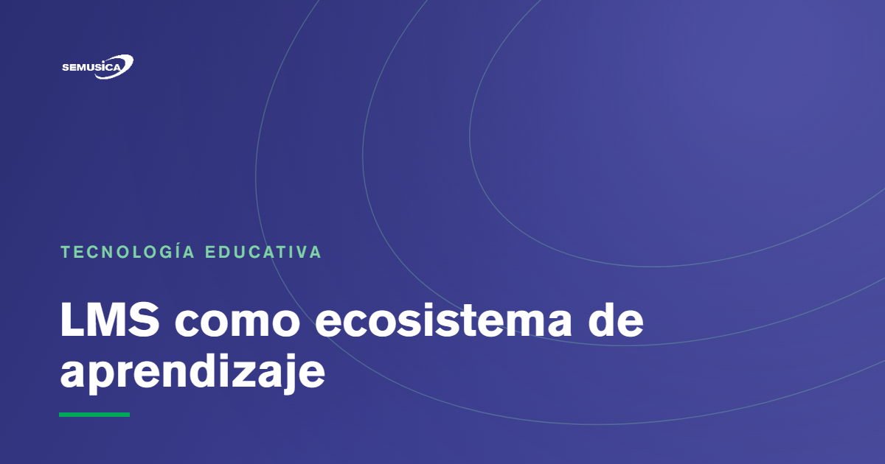

Blog › Tecnología educativa
LMS como ecosistema de aprendizaje, no solo como plataforma
Por Daniel Ravelo Franco — 2 jun 2026

Durante mucho tiempo, muchas organizaciones han entendido un LMS como un lugar donde se alojan cursos: una plataforma para subir contenidos, matricular usuarios, registrar avances y emitir constancias. Esa mirada no es incorrecta, pero sí resulta limitada frente a las necesidades reales de instituciones, academias, institutos y empresas.
En este artículo
- Más allá del aula virtual tradicional
- El aprendizaje necesita estructura, pero también contexto
- Itinerarios de aprendizaje alineados a roles
- Formación basada en competencias
- Personalización funcional y experiencia de usuario
- Paneles avanzados de perfil y visualización
- Integración con la gestión institucional
- Gestión de matrículas, pensiones y procesos académicos
- Desarrollo de soluciones a medida
- Un LMS como centro de una estrategia formativa
- Tecnología con sentido institucional y humano